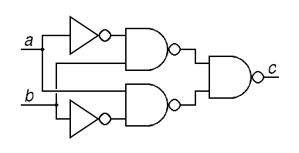
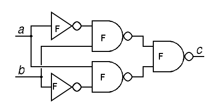

System.out.println("Parts of a Computer");
There are four generic parts of a computer:
System.out.println("Software Development for Dummies");
This is a console.log() application, and this is a GUI application.
Usually the console.log() stuff does the actual stuff. All the GUI stuff is fancy tricks. But you should know about operating systems which work back-end and front-end to give a computer life.
I'm covering specific stuff two sections later. Also I'm writing text straight down because I'm lazy.
System.out.println("Converting between Binary and Decimal Numbers");
Converting 011001 is easy. Make a table.
Fig 1: Binary Numbers and Indexes
| Number |
0 |
1 |
1 |
0 |
0 |
1 |
| Index |
5 |
4 |
3 |
2 |
1 |
0 |
Now follow this very simple formula
If you're bad at math, essentially multiply each number by 2index, and add.
Decimal = Σ(number * 2index)
If you did everything right you'll get an answer of 25
24 + 23 + 20 = 25
Converting int num = 25; is easy. Answer these two questions.
1. What's the largest exponent such that 2EXP <= number?
such that exp is whole
2. What is number - 2EXP? That's your new number.
Remember your exponents, they're your indexes. You should get int[] exp = {4,3,0};
Those numbers indexes where a 1 is. The places inbetween have 0. Make a table like the one above, and get your answer (it's the same one)
System.out.println("Logic Operators");
There are several types of logical operators to know for the test.
This yields itself towards the creation of larger logic gates, such as XOR. It's true ONLY if a OR b is true

Try processing the XOR gate above! Assume a and b are true, to keep things simple.
Simply follow the lines and evaluate the gates. Write down the booleans, and you should get this.

System.out.println("Memory");
A bit has two conditions: 0 (open) and 1 (closed)
Consider this: a one-unit length has two possible combinations. What about 2? 3? You'll eventually get this table:
| 1-length |
2-length |
| 0 |
00 |
| 1 |
01 |
|
10 |
|
11 |
If you did everything right, you'll get this formula for the combos of a n-unit length bit:
Permutations = 2n
n: length of bit
Now let's consider bigger memory spaces, such as the byte.
It's an 8-length bit, like this: 10010111
There are four general memory spaces now used, and they are as follows:
KB
Kilobyte
Posesses 210 bytes
MB
Megabyte
Posesses 220 bytes
GB
Gigabyte
Posesses 230 bytes
TB
Terabyte
Posesses 240 bytes
Converting uses bytes to get around. (duh). Simply memorize the chart above, and the fact 8 bits equal a byte, and dimensional analysis will carry you on!
System.out.println("Style");
Here is a sample class to demonstrate program STYLE and SYNTAX.
public class Hello2{ //CamelBack style
public static void main(String[] args) //GOTTA MEMORIZE!
Class2 penPinappleApplePen = new Class2(5); //camelBack style
penPineappleApplePen.getInt(); //general style of calling methods
System.out.println("end"); //semicolons end statements
}
class Class2{ //braces close up BLOCKS of code
private int num; //instance vars are designated private
public Class2(int a){ //constructors have the SAME NAME as its class
//also no parameters
num = a;
}
public int getInt(){
return numl
}
}
People love style and syntax because it makes programs easier to READ and CODE.
System.out.println("A Programmer's Tools");
In most languages, programmers have the following tools:

Some programs have an Interpreter that processes code line by line.
Python
Java runs both. Compiling yields .class files, which are later interpreted and run by a Java Virtual Machine

You can code using two ways: IDE or command line
Generally speaking, programmers aim for reusability, readability, user friendliness


{kind=link}
{kind=link}
{kind=link}